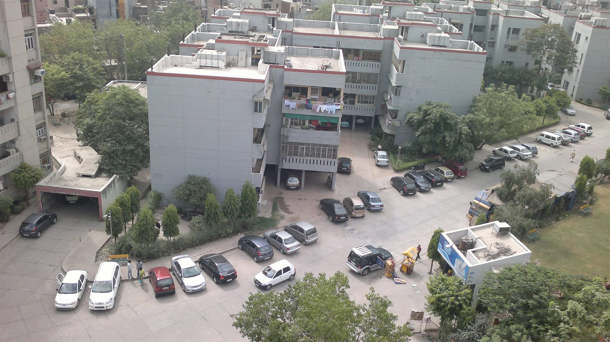

Location
The city, without the commute.
East End Apartments sits in Mayur Vihar Phase I (Extn.), East Delhi, with New Ashok Nagar metro station directly opposite Gate 2.

Distances
At the metro, not near it.
Gate 2 opens straight onto New Ashok Nagar station on the Blue Line, which puts the whole of Delhi within reach without a car. The airport, the railway stations and the ISBTs are all a direct drive away.
- New Ashok Nagar metro · Gate 20 km
- Akshardham Temple5 km
- Nizamuddin Railway Station8 km
- Anand Vihar ISBT8 km
- Connaught Place12 km
- New Delhi Railway Station12 km
- Old Delhi Railway Station17 km
- Indira Gandhi International Airport25 km
Distances follow published road directions and will vary with traffic and the route taken.
East End Apartments
Mayur Vihar Phase I (Extn.)
Opposite New Ashok Nagar Metro Station
Delhi 110096, India
Blue Line
New Ashok Nagar station, opposite Gate 2.
East Delhi
Akshardham 5 km · Connaught Place 12 km.
Three stations
Nizamuddin 8 km · New Delhi 12 km · Old Delhi 17 km.
IGI Airport
25 km by road, across the city.
The gates
Four ways in. Each with a job.
Visitor entry is kept to Gate 2, opposite the metro. Residents use Gate 1 by the market; services stay at Gate 3.
Gate 1 · Residents
Northern periphery, opposite the market and New Ashok Nagar colony. Open 24 hours for residents only; no visitor entry or exit.
Gate 2 · Visitors
Western periphery, directly opposite New Ashok Nagar metro station. The only gate for visitors.
Gate 3 · Services
North-east corner, used by maids, workers, deliveries and maintenance staff.
Gate 4 · Pedestrians
South-east corner, a small pedestrian gate at the rear. Currently not in operation.
Gate arrangements are as published by the society and may change during special situations or restricted periods.
Directions
Coming to see a flat?
Enter from Gate 2 opposite the metro. The property desk will meet you at the office at 2/102 and walk you to the residence.